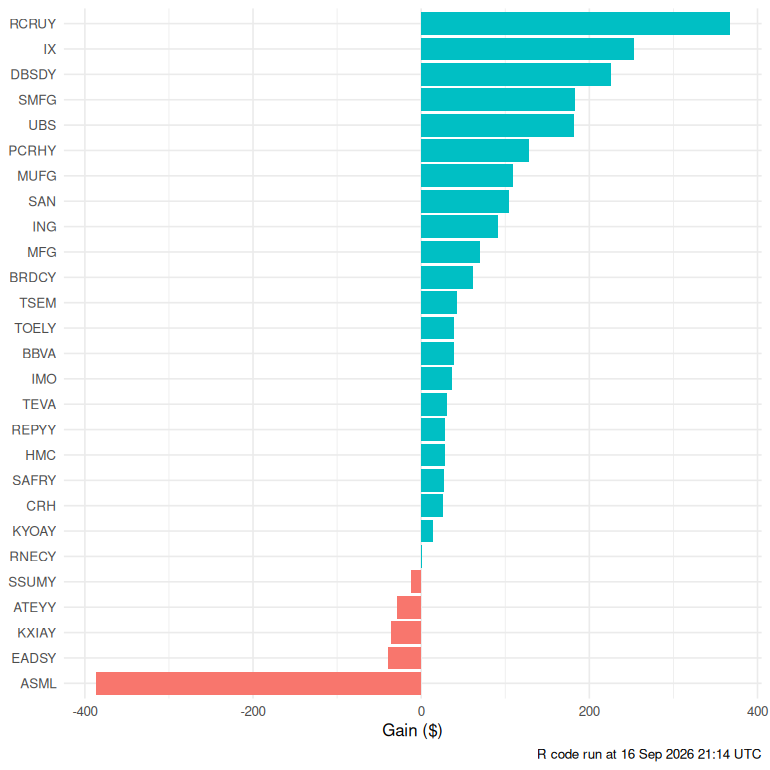
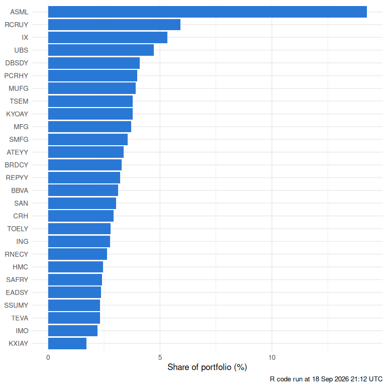

SHOURJO MAJUMDER'S PORTFOLIO
PRINT TEARSHEET
at 18 Aug 2026 close
HOME
PERFORMANCE METRICS
HOLDINGS
SHOURJO'S PORTFOLIO
SCENARIO ACTIVE
every figure on this page is hypothetical
RESET
GRAPH
hover a line or its label
REFRESH LIVE
QUICK SET
ALL 27
NONE
TOP 10
BOTTOM 10
WINNERS
LOSERS
STRESS TEST ›
HOLDINGS
click a column to sort
REFRESH LIVE
BENCHMARK SCOREBOARD
same dollars into each index on the same buy dates
REFRESH LIVE
CONTRIBUTION TO PORTFOLIO RETURN
gain in $ · built in R · rebuilt each weekday

ALLOCATION
share of market value · built in R · rebuilt each weekday

entry prices: Yahoo Finance closes · live prices: Finnhub /quote
IRR
×
STRESS TEST
×
RESET